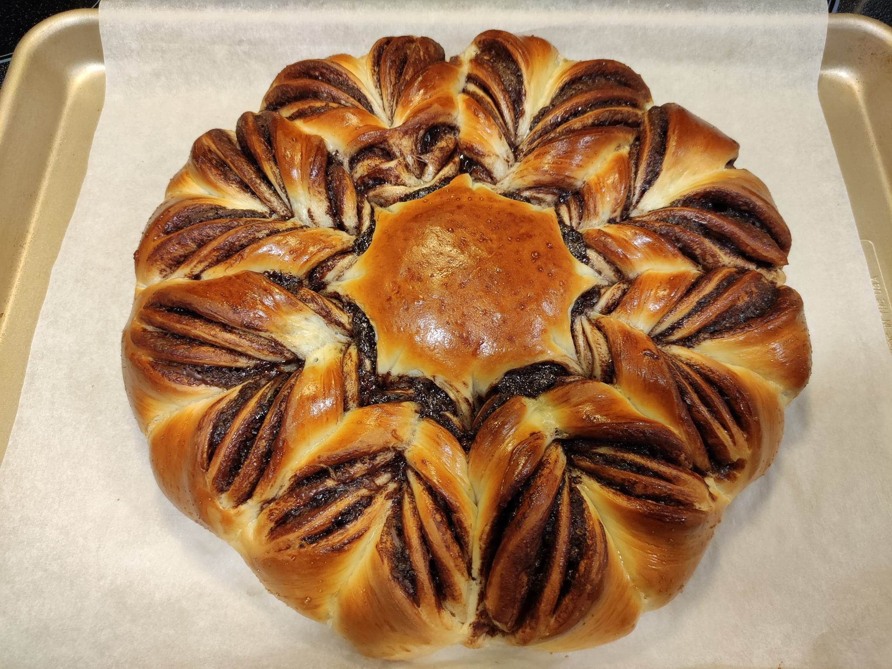
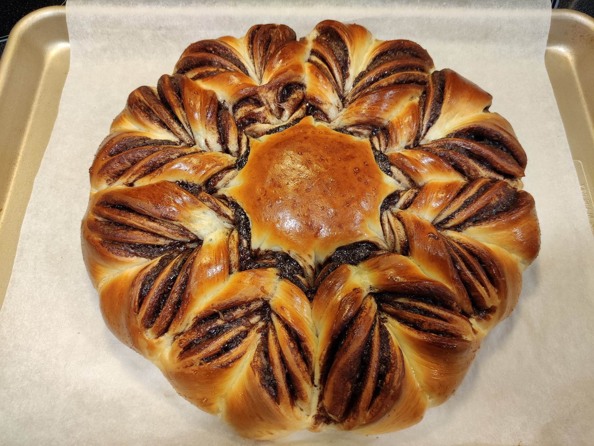
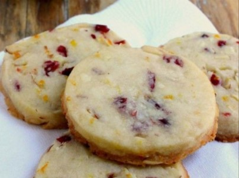
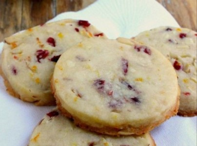

Witaj!
Jesteśmy grupą młodych ambitnych piekarzy i cukierników porozmieszczanych w całej Polsce. Łączą nas różne tradycyjne dania, dlatego też postanowiliśmy stworzyć stronę ku temu poświęconą z samymi godnymi polecenia przez nas potrawami.
Nasza grupa ma już kilka lat, przez co mieliśmy okazję skosztować już wiele pysznych i ciekawych dań, ale tylko te najlepsze będą się tu znajdować.
Na tą chwile nie ma tu zbytnio dużo przepisów, ale wraz z czasem bedą napływać coraz to nowsze i niebywale pyszne przepisy cukiernicze jak i normalne.
 

 
